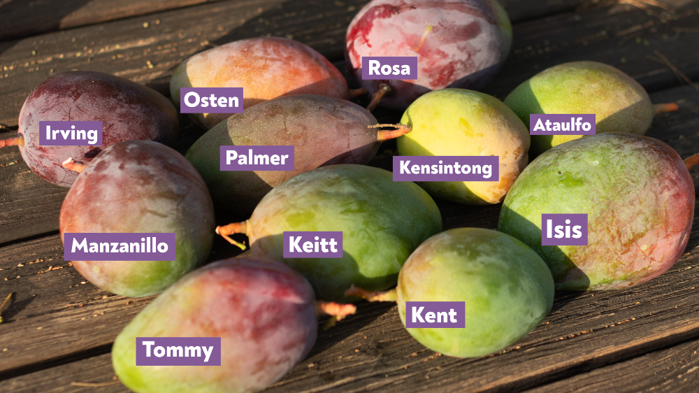
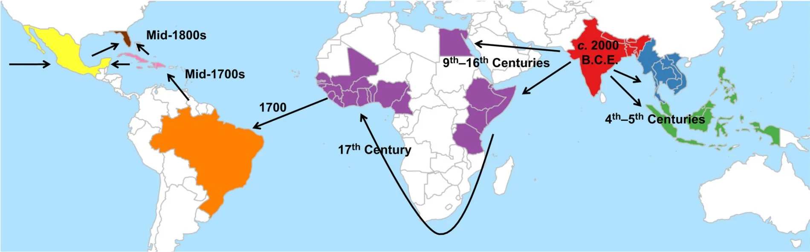

VARIEDADES
«Hay más de mil variedades del mango alrededor del mundo, con India teniendo el mayor número (más de quinientas nombradas). Las industrias comerciales del mundo se basan en un puñado de variedades mejoradas complementadas con variedades locales menos aptas para la exportación.»3
Algunas variedades del mango:
Mango de hilacha: Se caracteriza por tener una pulpa muy fibrosa como hilos.
Mango de jardín o mango criollo: Se caracteriza por su pequeño tamaño, similar al de un huevo.
Mango boca'o: De pequeño tamaño.
Mango injerto: De piel rojiza al madurar, pulpa firme y un sabor muy dulce con un levísimo toque agrio.
Manga: Se caracteriza por su considerable tamaño.
Mango Tommy: Más resistente a manipulación y transporte, mayor resistencia a degradación.
Mango chancleta: de forma alargada.
Mango manzano: Por su color rojizo y su forma, recuerda a una manzana.
Mango de azúcar: de piel amarga, pulpa firme y sabor muy dulce; muy popular en la elaboración de jugos.

Más variedades:
Rojas: Tommy Atkins, Haden, Irwin Red, Zill, Sunset Adams
Verdes: Kent, Carrie, Amalie
Amarillas: Ataulfo, Manila Super
Otras: Criolla, Edward, Van Dike
DISTRIBUCION
De origen asiático (India, Birmania y las islas Andamán), Mangifera indica crece espontáneamente en la zona intertropical en altitudes de 0 a aproximadamente 900 m s. n. m., o 1200 m s. n. m. La mayoría de las variedades de mango destinadas al comercio se cultivan debajo de los 600 m s. n. m.
Crece por ejemplo en Colombia (más específicamente en la selva baja) así como en el departamento del Magdalena (región Caribe), en Pica (Chile), en Ucayali (Perú), en grandes cantidades y variedades en el centro oriente de Venezuela, así como en Paraguay y en el nordeste argentino, lugares donde es un árbol frutal muy común de ver en la calle. Debido a su gran sabor y variedad de preparación, en los últimos siglos se ha expandido por el mundo tropical. Fue introducido en el siglo XVII a México desde Filipinas y en el siglo XVI a Brasil por los portugueses.

PLAGAS Y ENFERMEDADES
Son plagas del mango entre otras:
La mosca de la fruta (Anastrepha oblicua y Anastrepha serpentina).
La escama del mango (Milviscutulus mangiferae o Coccus mangiferae [son sinónimos]).
La escama acorazada (Aspidiotus palmae).
La escama cerosa (Vinsonia stellifera).
Nemátodos del suelo del género Aphelenchus.
El nemátodo lesionador (nemátodos del género Pratylenchus).
Son enfermedades del mango entre otras:
Antracnosis, causada por Colletotrichum gloesporoides.
Mancha blanca de las hojas, causada por Pestalotiopsis mangiferae.
Roña causada por Elsinoë mangiferae.
Oídio del mango / cenicilla del mango / mildiu polvoso / mildiu pulverulento causado por Oidium mangiferae.
Mal rosado causado por Corticium salmonicolor.
Pudriciones causadas por hongos de los géneros Diplodia, Gloesporium y Botrydiplodia y de la especie Phomopsis mangiferae.
Moho causado por hongos del género Fusarium.
Pudrición de almacenamiento causada por bacterias del género Erwinia.
Carencia de micronutrientes.